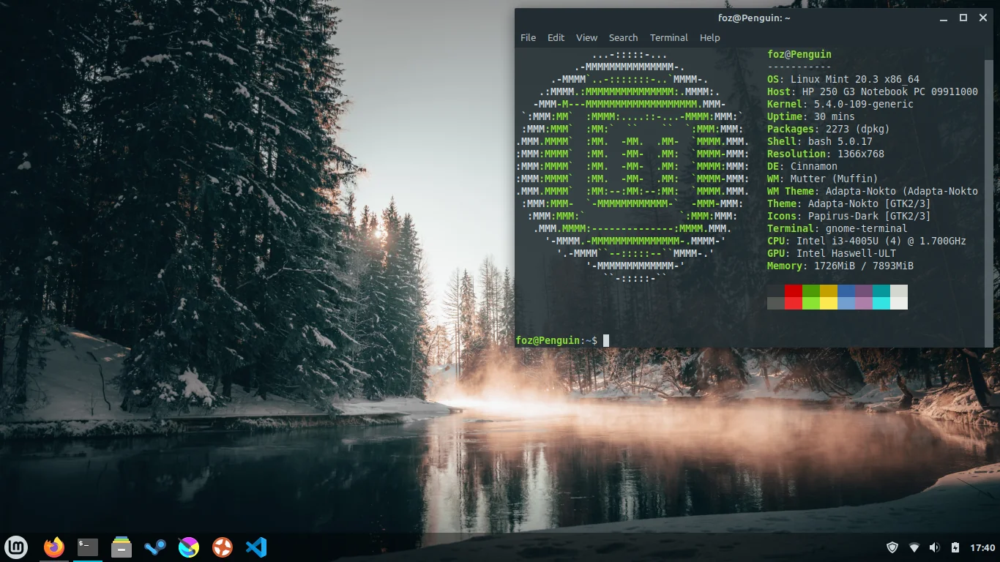

Segurança
Acessado: 26/04/2024 Mesmo que você conheça um software específico e seu desenvolvedor, você não pode ter certeza de que não está baixando um arquivo executável que foi trocado por algum tipo de malware desenvolvido por um terceiro mal-intencionado.
⦁ Além das medidas de segurança habituais postas em prática pelas instituições que possuem os servidores (normalmente prestigiadas instituições acadêmicas ou de pesquisa, além de grandes empresas), o repositório e os próprios pacotes são garantidos por certificados e chaves GPG. Se algo estiver errado, seu gerenciador de pacotes irá lhe informar. O presente autor deste tutorial, em dez anos de uso do Linux, nunca soube de qualquer coisa conhecida que tenha dado errado neste aspecto.
É difícil ou impossível saber como este software interagirá com outros softwares instalados em seu sistema
⦁ Da mesma forma, os mantenedores de pacotes dão o seu melhor para garantir que os pacotes não vão entrar em conflito com outros pacotes oferecidos pela sua distribuição. Claro, eles podem não ter todo os últimos pacotes instalados em suas máquinas de teste (na verdade, geralmente mantenedores de pacotes constroem seus pacotes em instalações limpas, para garantir que eles estão no padrão), mas se um membro da comunidade de usuários descobre que há um problema, ele, sem dúvida, deixará a equipe de distribuição sabendo. Assim, a falha será corrigida ou, pelo menos, abordada e trabalhada. A menos que você seja um beta-tester, é improvável que você já tenha visto um conflito destes porque é para isso que o teste beta existe.
Pacotes estáticos são grandes e grosseiros
⦁ Por estar usando o gerenciamento de pacotes, você só terá que baixar bibliotecas estáticas quando não há alternativas compartilhadas. Se precisar de novas bibliotecas de dados compartilhadas para instalar um determinado programa, seu gerenciador de pacotes vai saber disso, instalando-as automaticamente para você. Só será necessário baixar uma biblioteca compartilhada uma vez, porque... bem... ela é compartilhada por todos os programas que precisam dele. Se remover o último pacote que precisa de uma biblioteca compartilhada, em seguida o software de gerenciamento de pacotes a removerá também. Mas se você decidir que quer manter o objeto compartilhado de qualquer maneira (por exemplo porque você sabe se vai precisar dele mais tarde), então você pode ordenar ao software de gerenciamento de pacotes que também faça isso.
Site utilizado: Guia Oficial do UsuárioAtualizações - versão 21.3
Acessado: 26/04/2024
Uma das grandes novidades dessa edição do Linux Mint é o retorno do suporte ao Secure Boot, algo que foi perdido na versão 21.2 devido a um bug nas ferramentas de assinatura do Ubuntu. Felizmente, a correção ficou pronta a tempo para este lançamento, agora está fácil de fazer dual boot com Windows.
Por baixo do capô, o Linux Mint 21.3 apresenta o kernel Linux 5.15, Suíte MESA 23.04 e, embora o X.Org seja o servidor gráfico padrão, iniciou-se o suporte ao Wayland, que pode ser acessado de forma experimental, ainda com muitos bugs.
A compatibilização ao Wayland envolve modificar a interface gráfica padrão, o Cinnamon, que também é mantido pela mesma equipe de desenvolvimento. Na versão 6.0, que chegou junto ao último Mint, houve muito trabalho nesse sentido, ainda assim, não há data para o Wayland se tornar o novo padrão para o sistema.
Site utilizado: diolinux